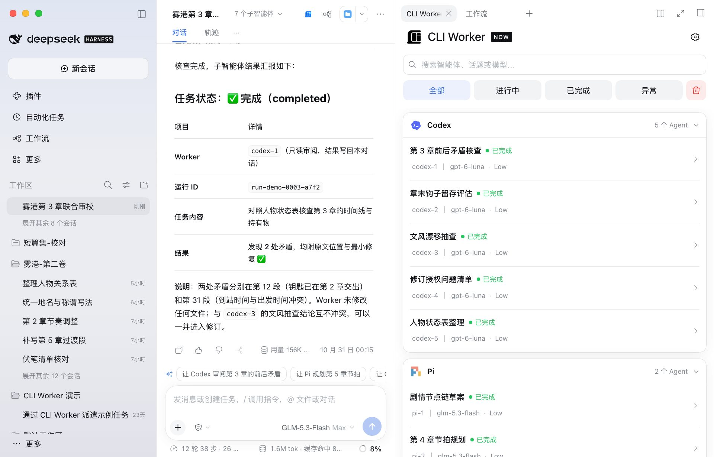
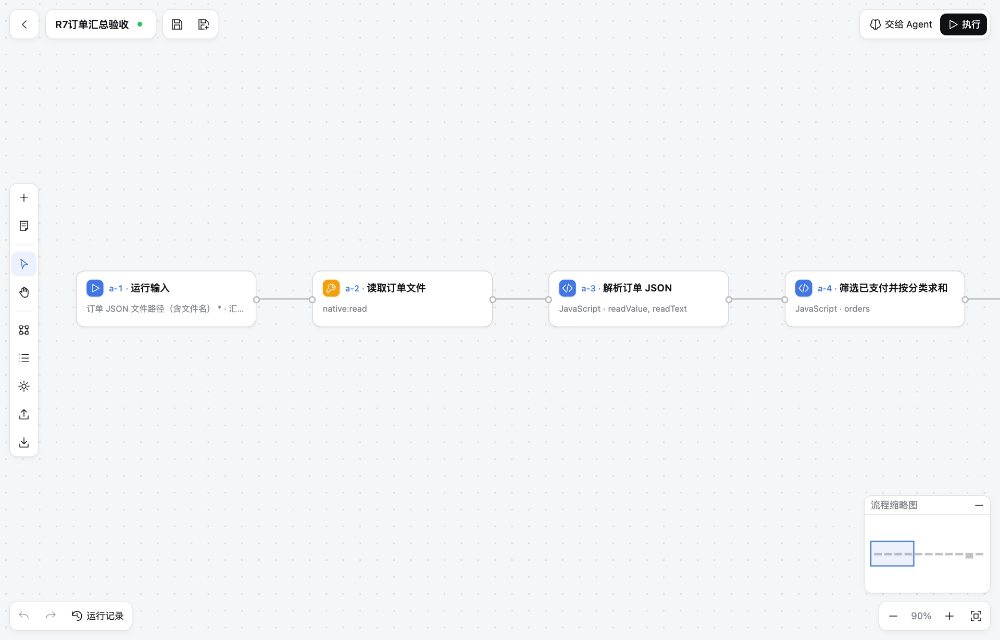
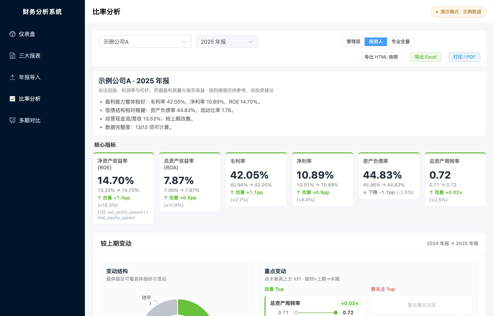

正在寻找产品经理实习
把模糊的需求，
做成能用、能验收的产品。
我是李依伦，东北大学会计学硕士在读。与 AI Agent 协作，主导了两款开源插件和一套财务分析系统：从发现问题、写 PRD、做 MVP，到迭代发布、处理用户反馈。
数据来自 CLI Worker Now，统计至 2026.10.30
三个作品
每个作品页都嵌入了按真实界面还原、可以直接操作的原型
01 · 开源插件 · 2026.10 至今
CLI Worker Now
DeepSeek Harness 多智能体协作插件。在主对话里派遣 Codex、Claude Code 等 13 种 AI CLI 分工协作，过程在侧栏统一查看，点名就能续聊。
我负责：问题定义 · 与 AI Agent 协作撰写 PRD · 方案迭代 · 版本排期
打开交互原型 →
02 · 开源插件 · 2026.10 至今
Visible Workflow
让 Agent 先真实试做，跑通后再拆成可视化工作流。用户在画布上查看节点、改配置、看每一步的运行输入输出，再把流程复用起来。
我负责：竞品对比 · 与 AI Agent 协作撰写 PRD · P0—P2 分期 · 验收管理
打开交互原型 →
03 · 个人项目 · 2026.03–2026.07
财务分析系统
导入上市公司年报，自动映射到标准会计科目并计算财务比率，为管理层、投资人和专业人员提供不同视图。
我负责：需求定义 · 口径与映射规则 · 分角色视图设计 · 测试验收
打开交互原型 →
我怎么把一个产品做完
以 CLI Worker Now 为例，从自己的痛点走到外部用户反馈闭环。
同时调用多个 AI CLI 时，谁在做什么、做到哪一步很难追踪；动手前先调研 herdr 等同类产品。
把用户问题、功能范围、权限规则和验收标准写进 PRD，再按优先级排期。
MVP 暴露体验问题后，把自绘对话页改为桥接 Harness 原生会话。
按自身需求与外部 Issue 排期，自动测试与真实环境验收分开记录。
从提出到关闭中位约 1 天；发布 5 篇介绍与教程，建立用户交流群。
需求调研与拆解、PRD 撰写、流程与规则设计、竞品分析、迭代验收；会使用 Figma 绘制原型
SQL、Tableau、Excel 数据透视表、VBA、R 数据清洗与可视化
用 Codex、Claude Code 拆解需求与协作开发，组织多 Agent 并行实施、交叉审查